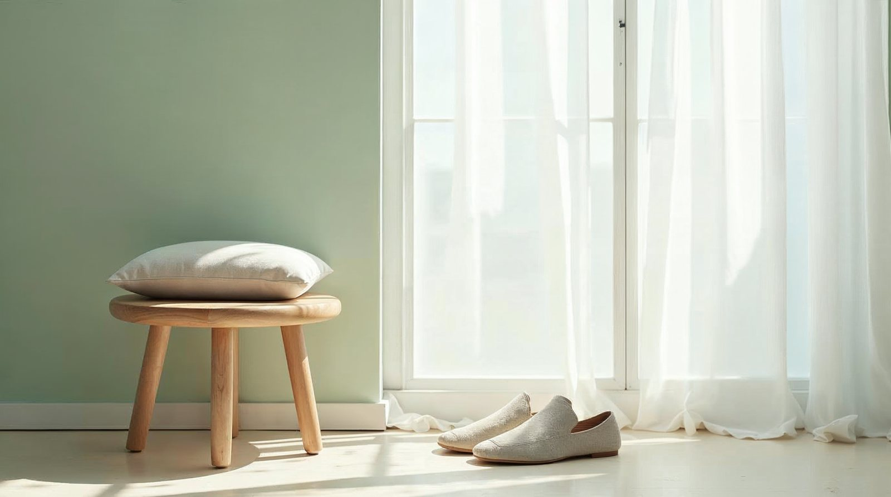
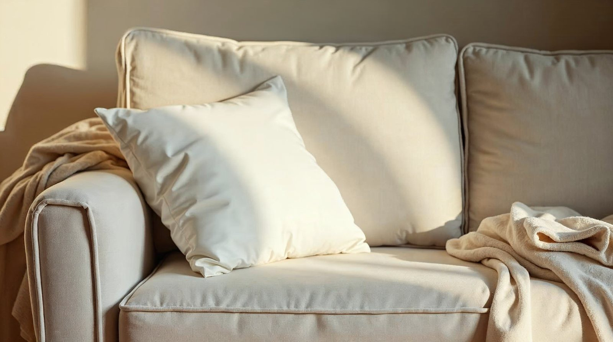
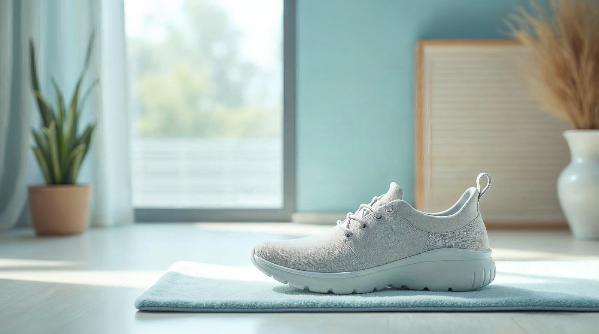
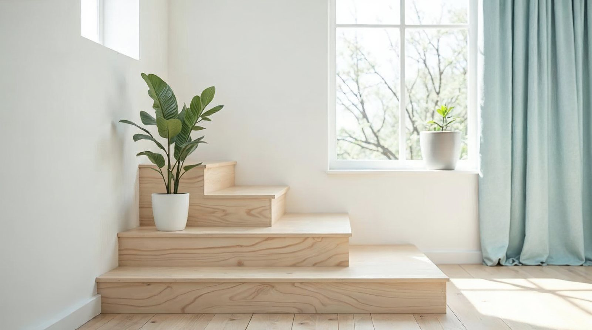
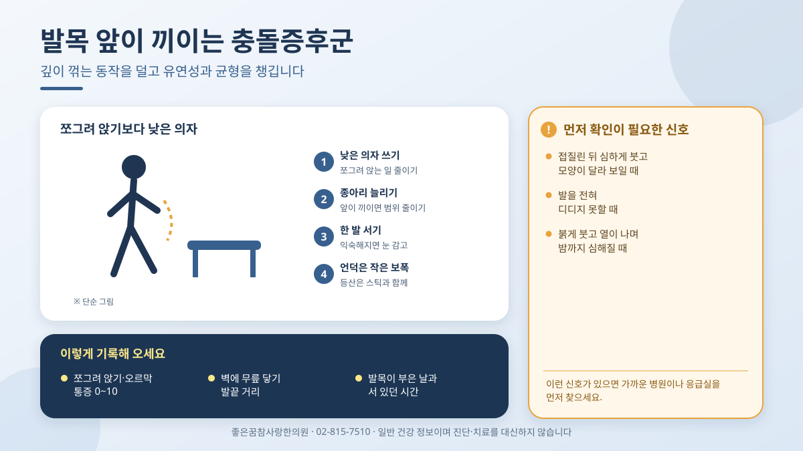

이종호 한의사 감수좋은꿈참사랑한의원 대표원장 (한의사 면허번호 19769)발행 2026-11-26 · 수정 2026-11-27
이 글의 차례
김장 날 배추를 절이려고 바닥에 쪼그려 앉는데 발목 앞쪽이 콱 막힌 듯 아파요. 발뒤꿈치를 바닥에 붙이고 앉을 수가 없어 결국 까치발로 앉습니다. 상도동 언덕길을 오를 때도 발목 앞이 찝히는 느낌이 들고, 계단을 내려올 때보다 오를 때가 더 불편하시죠.
진료실에서 이런 얘기를 들으면 저는 먼저 예전에 발목을 접질린 적이 있는지 여쭤요. 운동하다 여러 번 삐었거나, 오래전에 크게 접질린 적이 있다는 대답이 돌아오는 경우가 많거든요. 축구, 농구, 등산, 달리기를 오래 해 오신 분이라면 더 그래요.
발목을 위로 꺾을 때 정강이뼈 아래 끝과 발목뼈 앞쪽이 서로 맞부딪히며 그 사이에 있는 조직이 끼이는 상태를 발목 앞쪽 충돌증후군이라고 불러요. 이름은 어렵지만, '발목 앞이 끼인다'는 느낌 그대로를 설명하는 말이에요.
한 번에 생기기보다 몇 달, 몇 년에 걸쳐 서서히 드러나는 경우가 많아서 언제부터였는지 정확히 기억하지 못하시는 분도 많아요. 원래 그래요. 그동안 발목을 열심히 써 오셨다는 뜻이기도 하고요.
그러니까 사실은 '삔 것'과 '끼이는 것'은 다른 얘기예요. 삔 건 그날의 사고이고, 끼이는 건 그 뒤로 발목이 어떻게 지내 왔는지가 쌓인 결과에 가깝거든요. 그래서 저는 오늘 아픈 자리만큼 예전 얘기도 같이 들어요.
이 글에서는 발목 충돌증후군이 무엇인지, 왜 생기는지, 다른 발목 통증과 어떻게 나눠 보는지, 집에서 할 수 있는 것과 한의원에서 함께 살피는 부분을 차례로 정리했어요.
발목 충돌증후군은 어떤 상태인가요
발목 관절은 정강이뼈 아래 끝이 발목뼈 위에 얹힌 모양입니다. 발목을 위로 꺾으면, 그러니까 발등을 정강이 쪽으로 당기면 정강이뼈 앞 끝과 발목뼈 목 부분이 서로 가까워집니다.
이 사이에는 관절을 싸고 있는 얇은 막과 지방 조직, 인대가 있습니다. 평소에는 이 조직들이 접혀 들어가며 부드럽게 비켜 줍니다. 그런데 이 조직이 두꺼워지거나 뼈 끝이 조금 덧자라면, 발목을 꺾을 때마다 그 사이에 끼이며 통증이 생깁니다.
그래서 발목 충돌증후군은 쪼그려 앉기, 오르막 걷기, 계단 오르기, 런지처럼 발목을 깊이 꺾는 동작에서 아픈 것이 특징입니다. 평지를 걷거나 발끝을 아래로 내리는 동작에서는 크게 불편하지 않은 경우가 많습니다.
발목 뒤쪽에서 비슷하게 끼이는 경우도 있습니다. 발레나 축구에서 발끝을 아래로 세게 뻗는 동작이 많으면 발목 뒤쪽이 끼이며 아프기도 하는데, 이 글에서는 더 흔한 앞쪽 충돌을 중심으로 말씀드립니다.
왜 발목 앞이 끼이게 될까요
가장 흔한 배경은 되풀이된 발목 염좌입니다. 발목을 삘 때마다 인대와 관절막에 작은 손상과 염증이 생기고, 그것이 아물며 조직이 조금씩 두꺼워집니다. 두꺼워진 조직이 발목 앞쪽 좁은 틈에 자리를 잡으면 꺾을 때마다 끼이게 됩니다.
반복되는 운동도 영향을 줍니다. 축구에서 공을 차는 동작, 농구와 배구의 착지, 오르막 달리기와 등산처럼 발목을 깊이 꺾는 동작이 수천 번 되풀이되면 정강이뼈 앞 끝과 발목뼈가 자주 맞부딪힙니다. 그 자극에 뼈 끝이 조금씩 덧자라기도 합니다. 그래서 오래 운동해 온 분에게 '축구 선수 발목'이라는 별명이 붙기도 합니다.
종아리 근육이 굳어 있는 것도 함께 봅니다. 종아리가 뻣뻣하면 발목이 위로 꺾이는 범위가 줄어들고, 부족한 만큼을 발목 앞쪽이 억지로 맞부딪히며 채우게 됩니다. 발목이 불안정해 디딜 때마다 조금씩 흔들리는 분도 앞쪽 조직이 자극받기 쉽습니다.
예전에 발목을 크게 다쳐 깁스를 오래 했던 분, 발목 골절 뒤 재활을 충분히 하지 못한 분도 발목이 꺾이는 범위가 줄어든 채로 지내다 앞쪽이 끼이는 경우가 있습니다. 다친 지 오래되어 잊고 지내던 발목이 몇 년 뒤 이렇게 신호를 보내기도 합니다.
발 모양도 함께 봅니다. 발이 안쪽으로 많이 무너지는 분은 걸을 때 발목 안쪽 앞이, 아치가 높은 분은 바깥쪽 앞이 더 자주 자극받는 경향이 있어서, 서 있는 발의 모양과 신발 밑창이 닳은 자리를 함께 살펴봅니다.
다른 발목 통증과는 무엇이 다른가요
발목이 아프다고 할 때 아픈 자리와 아픈 동작을 나눠 보면 방향이 보입니다.
- 발목 앞쪽 가운데나 안쪽 앞이 쪼그려 앉기와 오르막에서 끼이듯 아프다: 앞쪽 충돌을 먼저 생각합니다
- 바깥 복사뼈 앞아래가 아프고 자꾸 꺾이는 느낌이 든다: 발목 인대 손상과 불안정을 함께 봅니다
- 안쪽 복사뼈 아래가 저리고 발바닥이 화끈거린다: 발목 터널 쪽 신경 문제를 함께 봅니다
- 발뒤꿈치 위 힘줄이 아침마다 뻣뻣하다: 아킬레스건 쪽을 함께 봅니다
- 발목 전체가 붓고 여러 관절이 함께 아프다: 관절염 같은 전신 원인을 함께 확인합니다
실제로는 발목 불안정과 앞쪽 충돌이 함께 있는 경우가 흔합니다. 자주 삐는 발목이 앞쪽 조직을 두껍게 만들고, 끼이는 통증 때문에 발목을 덜 쓰다 보니 균형 감각이 더 떨어지는 흐름이 생기기 때문입니다. 그래서 두 가지를 함께 살펴봅니다.

집에서 해 볼 수 있는 간단한 확인
통증이 크게 올라오면 바로 멈추세요.
- 벽 앞에 서서 발끝을 벽에서 손가락 몇 마디 떨어뜨리고 무릎을 벽에 닿게 내밀 때 양쪽 차이
- 그 동작에서 발목 앞쪽이 끼이는 느낌이 드는지, 종아리가 당기는지
- 발뒤꿈치를 바닥에 붙인 채 쪼그려 앉을 수 있는지
- 한 발로 30초 서 있을 때 양쪽 흔들림 차이
벽에 무릎 닿기에서 발끝과 벽 사이 거리를 자로 재어 두시면 좋습니다. 아픈 쪽이 확연히 짧다면 발목이 위로 꺾이는 범위가 줄었다는 뜻이고, 그때 앞이 끼이는지 종아리가 당기는지에 따라 살필 방향이 조금 달라집니다.
생활 속 동작은 어떻게 바꾸나요
발목 충돌증후군은 발목을 깊이 꺾는 동작에서 아프니, 생활 속에서 그런 동작을 조금 덜어 주는 것만으로도 편해지는 경우가 많습니다.
바닥에 쪼그려 앉아 하는 일은 낮은 의자에 앉아서 하고, 아이와 눈을 맞출 때는 쪼그려 앉기보다 한쪽 무릎을 바닥에 대는 자세를 써 봅니다. 오르막길에서는 보폭을 줄이고, 계단은 발 전체를 디딜 수 있게 천천히 오릅니다.
신발 뒤꿈치가 살짝 높은 운동화는 발목이 꺾이는 각도를 조금 줄여 줍니다. 반대로 바닥이 완전히 평평하고 얇은 신발로 언덕길을 오래 걸으면 발목 앞쪽이 더 자주 끼일 수 있습니다. 등산할 때는 발목을 감싸 주는 등산화와 스틱을 함께 쓰시길 권합니다.
운동은 계속해도 되나요
통증이 가볍고 다음 날 아침에 가라앉는다면 대부분 운동을 이어 가실 수 있습니다. 다만 깊은 런지, 쪼그려 앉아 버티기, 오르막 달리기처럼 발목을 깊이 꺾는 동작은 범위와 횟수를 줄입니다.
운동 전에는 종아리를 충분히 풀고, 발목을 천천히 위아래로 움직여 데운 뒤 시작합니다. 발목이 자주 꺾이는 분이라면 한 발 서기, 눈 감고 한 발 서기 같은 균형 운동을 함께 하면 디딜 때의 흔들림이 줄어 앞쪽 자극도 덜해질 수 있습니다.
운동 뒤 발목 앞쪽에 열감이 있다면 얇은 수건으로 감싼 차가운 찜질을 10분 남짓 대 주세요. 통증이 점점 잦아지거나 운동을 하지 않아도 아프기 시작한다면 진찰을 받아 보실 때입니다.

발목이 붓는 날은 어떻게 하나요
발목 앞쪽이 자주 끼이는 분은 오래 서 있거나 많이 걸은 날 저녁에 발목 앞이 볼록하게 붓기도 합니다. 끼이는 자극에 관절 안에 물이 조금 고이거나 주변 조직이 붓는 경우입니다. 붓기가 있으면 발목이 더 꺾이지 않아 다음 날 아침 첫걸음이 뻣뻣하게 느껴집니다.
붓는 날에는 저녁에 누워 발을 심장보다 조금 높게 올려 두고, 발목을 천천히 위아래로 움직여 주세요. 종아리 근육이 펌프처럼 움직이면서 고인 붓기가 빠지는 데 도움이 됩니다. 열감이 함께 있다면 차가운 찜질을 짧게 더해 줍니다.
붓기가 며칠씩 이어지거나 한쪽만 점점 굵어진다면 발목 문제만이 아닐 수 있으니 진찰을 받아 보세요.

오래 서서 일하는 분의 발목
매장이나 주방, 현장에서 오래 서서 일하는 분은 발목이 하루 종일 같은 각도로 버팁니다. 딱딱한 바닥에서 오래 서 있으면 종아리가 굳고, 퇴근길 언덕과 계단에서 발목 앞이 더 쉽게 끼입니다.
일하는 중간에 한 번씩 발뒤꿈치를 들었다 내리거나 발목을 돌려 주면 종아리가 덜 굳습니다. 쿠션이 있는 신발이나 깔창, 서 있는 자리에 까는 매트도 도움이 됩니다. 퇴근 뒤에는 종아리를 가볍게 늘리고 발을 높이 올려 쉬어 주세요.
먼저 이렇게 여쭙니다
처음 오시면 대략 이런 순서로 여쭙니다. 미리 떠올려 오시면 이야기가 훨씬 수월해집니다.
- 예전에 발목을 몇 번, 어느 정도로 접질렸나요?
- 쪼그려 앉기, 오르막, 계단 오르기 가운데 언제 가장 아픈가요?
- 발목이 자주 꺾이거나 불안한 느낌이 드나요?
- 하시는 운동과 일, 서 있거나 걷는 시간은 어떤가요?
- 발목이 잘 붓나요? 붓는다면 언제 더 붓나요?
- 예전에 발목 사진을 찍은 적이 있나요?
평소 자주 신는 운동화나 등산화를 한 켤레 들고 오시면 밑창이 닳은 모양을 함께 볼 수 있습니다.
예전 검사 결과지나 사진이 있다면 가져와 주세요. 드시는 약이 있다면 이름도 함께 알려 주시고, 처방받은 약은 처방한 선생님과 상의 없이 끊지 않습니다.
일상에서 먼저 해 볼 수 있는 것
- 쪼그려 앉아 하는 일은 낮은 의자에 앉아서 하기
- 종아리를 무릎 편 자세와 굽힌 자세로 각각 20~30초씩 늘리기
- 한 발 서기를 하루 몇 번, 익숙해지면 눈 감고 해 보기
- 언덕길은 보폭을 줄이고, 등산할 때는 스틱 쓰기
- 운동 뒤 열감이 있으면 얇은 수건으로 감싼 차가운 찜질
- 발목을 감싸 주는 신발과 뒤꿈치가 살짝 높은 운동화 고르기
종아리를 늘릴 때 발목 앞이 끼이는 느낌이 든다면 범위를 줄이고, 앞이 아니라 종아리가 당기는 느낌이 드는 지점까지만 하세요. 억지로 깊이 누르면 오히려 앞쪽을 더 자극할 수 있습니다.

한의원에서 함께 살필 수 있는 경우
- 쪼그려 앉기와 오르막에서 발목 앞쪽이 끼이듯 아픈 경우
- 예전 발목 염좌 뒤로 발목이 뻣뻣하고 자주 붓는 경우
- 종아리가 굳어 발목이 위로 잘 꺾이지 않는 경우
- 발목 통증 때문에 걸음이 바뀌어 무릎이나 허리까지 불편한 경우
- 운동을 이어 가며 발목을 함께 관리하고 싶은 경우
좋은꿈참사랑한의원에 오시면 먼저 아래 '먼저 확인이 필요한' 신호가 없는지부터 봅니다. 그다음 발목 앞쪽과 복사뼈 주변, 종아리를 직접 만져 보고, 발목이 꺾이는 범위와 한 발 서기, 걷는 모습을 함께 봅니다. 필요하다고 판단되면 족저 검사로 발바닥이 바닥에 닿는 모양을 살펴보기도 합니다.
진찰한 내용을 바탕으로 침이나 약침, 온열 관리, 추나 상담, 집에서 할 운동 가운데 지금 상태에 맞는 것을 정합니다. 한약은 붓기와 피로가 함께 문제일 때 드시는 약을 확인한 뒤 신중히 상의합니다. 뼈가 덧자라 움직임을 크게 막는 것이 의심되면 정형외과 진료를 함께 권합니다.
이렇게 기록해 오시면 상담이 쉬워집니다
- 쪼그려 앉기, 오르막, 계단 오르기 통증을 0~10으로
- 벽에 무릎 닿기에서 발끝과 벽 사이 거리
- 발목이 꺾이거나 삐끗한 날
- 운동한 날과 다음 날 아침 상태
- 발목이 부은 날과 그날 서 있었던 시간
기록을 나란히 놓고 보면 어떤 동작과 생활이 발목 앞쪽을 자극하는지, 운동과 스트레칭이 얼마나 차이를 만드는지가 보입니다. 빠진 날이 있어도 괜찮습니다.
오래 쓰는 발목을 위해
발목 충돌증후군은 오래 열심히 써 온 발목이 보내는 신호인 경우가 많아요. 겁낼 일이라기보다, 그동안 많이 걷고 뛰고 오르셨다는 흔적에 가깝죠. 예전에 삔 발목을 그냥 넘겼던 기억이 있다면, 이번에 발목의 유연성과 균형을 같이 챙겨 보시면 돼요.
등산이나 운동을 그만두시라는 게 아니에요. 오르막의 경사와 거리를 조금 조절하면서 이어 가시면 되는 거예요. 지금 챙기는 발목이 앞으로도 오래 걷고 오를 발목이거든요.
발목 앞에 쌓인 긴장과 굳은 움직임을 살피는 건 제가 할게요. 대신 하나만 부탁드려요. 바닥에 쪼그려 앉아야 하는 일은 낮은 의자 하나를 받쳐서 해 주세요. 딴 건 하시던 대로 편하게 하셔도 돼요.
다음에 오시면 기록을 같이 보면서 다음 걸음을 정할게요. 궁금한 게 생기면 그때 그냥 편하게 물어보세요.
이런 증상은 먼저 확인이 필요합니다
- 넘어지거나 접질린 뒤 발목이 심하게 붓고 모양이 달라 보이거나 발을 전혀 디디지 못하는 경우
- 발목이 붉게 붓고 뜨거우며 열이 나거나 쉬어도 밤까지 점점 심하게 아픈 경우
이런 신호가 있으면 한의원보다 가까운 병원이나 응급실을 먼저 찾으세요.
함께 읽으면 좋은 글
- 발목을 자주 접질리는 반복 발목 염좌와 발목 불안정은 어떻게 살피나요?
- 발목이 자꾸 꺾이고 불안한 만성 발목 불안정은 균형 감각부터 어떻게 다시 기르나요?
- 안쪽 복사뼈 아래가 저리고 발바닥이 화끈거리는 발목 터널 증후군(족근관 증후군)은 어떻게 살피나요?
- 예전에 발목을 자주 삐었는데 요즘 무릎과 허리가 불편하면 연관이 있나요?
- 발목 골절로 깁스를 풀고 난 뒤 붓고 뻣뻣한 발목은 재활 기간에 어떻게 살피나요?

여쭙는 것
- 예전에 발목을 몇 번, 어느 정도로 접질렸나요?
- 쪼그려 앉기, 오르막, 계단 오르기 가운데 언제 가장 아픈가요?
- 발목이 자주 꺾이거나 불안한 느낌이 드나요?
생활에서 해 볼 것
- 쪼그려 앉아 하는 일은 낮은 의자에 앉아서 하기
- 종아리를 무릎 편 자세와 굽힌 자세로 각각 20~30초씩 늘리기
- 한 발 서기를 하루 몇 번, 익숙해지면 눈 감고 해 보기
한의원에서 함께 살필 것
- 쪼그려 앉기와 오르막에서 발목 앞쪽이 끼이듯 아픈 경우
- 예전 발목 염좌 뒤로 발목이 뻣뻣하고 자주 붓는 경우
- 종아리가 굳어 발목이 위로 잘 꺾이지 않는 경우
먼저 확인이 필요한 신호
- 넘어지거나 접질린 뒤 발목이 심하게 붓고 모양이 달라 보이거나 발을 전혀 디디지 못…
- 발목이 붉게 붓고 뜨거우며 열이 나거나 쉬어도 밤까지 점점 심하게 아픈 경우
한눈에 보는 표
| 구분 | 핵심 |
|---|---|
| 여쭙는 것 | 예전에 발목을 몇 번, 어느 정도로 접질렸나요? 쪼그려 앉기, 오르막, 계단 오르기 가운데 언제 가장 아픈가요? |
| 생활에서 해 볼 것 | 쪼그려 앉아 하는 일은 낮은 의자에 앉아서 하기 종아리를 무릎 편 자세와 굽힌 자세로 각각 20~30초씩 늘리기 |
| 한의원에서 함께 살필 것 | 쪼그려 앉기와 오르막에서 발목 앞쪽이 끼이듯 아픈 경우 예전 발목 염좌 뒤로 발목이 뻣뻣하고 자주 붓는 경우 |
| 먼저 확인이 필요한 신호 | 넘어지거나 접질린 뒤 발목이 심하게 붓고 모양이 달라 보이거나 발을 전혀 디디지 못하는 경우 발목이 붉게 붓고 뜨거우며 열이 나거나 쉬어도 밤까지 점점 심하게 아픈 경우 |
자주 묻는 질문
발목 앞이 끼이는데 스트레칭을 세게 하면 풀리나요?
앞쪽이 끼이는 상태에서 발목을 억지로 깊이 꺾으면 오히려 그 자리를 더 자극할 수 있습니다. 종아리가 당기는 지점까지만 천천히 늘리고, 앞이 끼이면 범위를 줄이세요.
예전에 삔 발목 때문에 생긴 건가요?
되풀이된 발목 염좌가 흔한 배경이지만, 반복되는 운동이나 굳은 종아리처럼 다른 이유가 함께 있는 경우도 많습니다. 진찰로 여러 가지를 함께 살펴봅니다.
발목 보호대를 차면 도움이 되나요?
발목이 자주 꺾이는 분은 운동할 때 불안감을 덜어 주는 데 쓰일 수 있습니다. 다만 보호대에만 기대기보다 균형 운동과 종아리 관리를 함께 하시길 권합니다.
뼈가 자랐다고 들었는데 한의원 진료가 의미가 있나요?
덧자란 뼈 자체를 없애는 것은 아니지만, 주변 근육과 붓기, 발목 움직임과 균형을 함께 살피는 데 도움을 드릴 수 있습니다. 움직임을 크게 막는다면 정형외과 상담을 함께 권합니다.
등산을 계속해도 되나요?
통증이 가볍고 다음 날 가라앉는다면 대개 이어 가실 수 있습니다. 오르막에서 보폭을 줄이고 스틱과 발목을 감싸 주는 등산화를 쓰시면 발목 앞쪽 부담이 덜합니다.
좋은꿈참사랑한의원은 재진 때 지난번 이야기부터 이어서 여쭙니다. 진료시간과 예약은 오시는 길에서 확인하세요.
어디서 상담받을 수 있나요?
좋은꿈참사랑한의원은 서울 동작구 만양로2길 2 신성빌딩 3층·5층(서울 동작구 상도동, 7호선 상도역 3번 출구 근처)에 있습니다. 한의사 3명(이종호 대표원장, 조영기 수석진료원장, 정원영 진료원장)이 진료합니다. 진료시간은 평일 09:30~20:00(점심 13:00~14:00), 토·일·공휴일 09:30~15:00이며, 방문 전 전화로 확인을 권합니다. 예약은 네이버 예약, 카카오톡 상담, 전화 02-815-7510로 받습니다.
이 글은 일반적인 건강 정보이며 개인의 진단이나 치료를 대신하지 않습니다. 증상이 있거나 복용 중인 약이 있다면 진료를 통해 확인하세요. 치료 효과는 개인마다 다를 수 있습니다.
작성 기준: 일반적으로 알려져 있는 건강 정보를 참고해 정리했습니다(대표원장 감수). 증상 기록은 1~2주 동안 하루 1회, 비슷한 시간에 적어 오시면 지난 상태와 비교하기 쉽습니다.